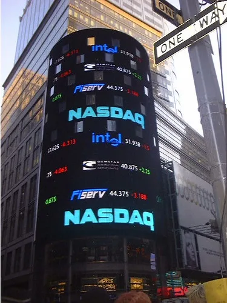
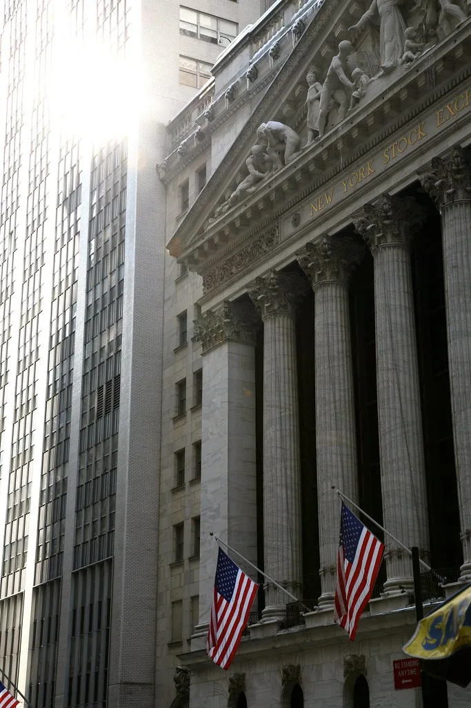

미국 뉴욕증시가 인공지능(AI) 관련주를 중심으로 한 투매에 크게 무너졌다. 20일(현지시간) 기술주 중심의 나스닥 종합지수는 전장보다 1261.47포인트(5.28%) 떨어진 2만2617.73에 거래를 마쳤다. 다우존스30 산업평균지수는 949.73포인트(1.93%) 내린 4만8147.33, 스탠더드앤드푸어스(S&P)500 지수는 3.69% 하락한 6910.79로 장을 마감했다.
이날 하락으로 다우와 S&P500 지수는 전고점 대비 10% 이상 떨어져 이른바 '조정 국면'에 들어섰다. 나스닥 지수는 올해 들어 쌓아 온 상승분을 모두 반납하며 연초 대비 수익률이 마이너스로 돌아섰다. 한 주 동안의 낙폭도 컸다. 이번 주 나스닥은 약 10%, S&P500과 다우는 각각 8%대 하락한 것으로 집계됐다. 통상 고점 대비 10% 이상 하락하면 조정 국면, 20% 이상 하락하면 약세장으로 분류한다.

하락을 주도한 것은 반도체와 AI 대표 종목이었다. 엔비디아는 14% 넘게 급락해 52주 최저가로 마감했고, AMD도 13%가량 떨어졌다. 메모리 반도체 기업 마이크론 역시 13% 안팎의 하락률을 기록했다. AI 반도체 수요 기대를 등에 업고 가파르게 올랐던 종목일수록 하락 폭이 컸다. 엔비디아를 두고는 미국 증권거래위원회(SEC)가 회계 처리 방식을 들여다보고 있다는 소식까지 전해지며 투자 심리가 더욱 위축됐다.
시장의 근본적인 불안은 AI 투자가 실제 수익으로 이어질 수 있느냐는 의문이다. 엔비디아가 시장 기대를 웃도는 실적을 발표하고, 앤트로픽이 역대 최대 규모의 기업공개(IPO)에 성공하는 등 업계 소식은 긍정적이었지만, 천문학적인 데이터센터 투자 비용을 감당할 만큼 수익이 뒤따를지에 대한 의구심이 오히려 커졌다는 분석이다. 앤트로픽 상장 이후 기술주 전반에 차익 실현 매물이 몰린 점도 낙폭을 키웠다.
금리 부담도 시장을 짓눌렀다. 리사 쿡 연방준비제도(Fed) 이사는 현재 정책금리가 물가 상승 압력을 억제할 만큼 충분히 높지 않다는 취지로 발언했다. 시카고상품거래소(CME) 그룹의 페드워치에 따르면 시장은 다음 달 연준 회의에서 금리가 인상될 가능성을 90% 이상으로 반영했다. 금리 인상은 미래 이익에 대한 기대가 주가에 크게 반영된 기술주에 특히 불리하게 작용한다.

투자자들의 불안 심리는 수치로도 드러났다. '월가의 공포지수'로 불리는 시카고옵션거래소(CBOE) 변동성지수(VIX)는 37선까지 치솟았다. 통상 VIX가 30을 넘으면 시장이 극심한 불안 상태에 있는 것으로 해석된다. 하루 만에 수많은 기술 기업의 시가총액이 증발하면서, 그동안 AI 열풍을 이끌어 온 대형 기술주에 대한 재평가가 본격화하는 것 아니냐는 관측도 나온다.
미국 증시 급락은 아시아 시장에도 부담이 될 전망이다. 국내 증시는 이미 20일 코스피가 5% 넘게 떨어진 상태에서 주말을 맞았다. 전문가들은 다음 달 연준의 금리 결정과 주요 기술 기업의 투자 계획 변화가 시장 방향을 가를 변수가 될 것이라며, 당분간 높은 변동성에 대비해야 한다고 조언했다. 다만 단기간 과도한 하락 이후에는 저가 매수세가 유입될 수 있다는 의견도 함께 나온다.